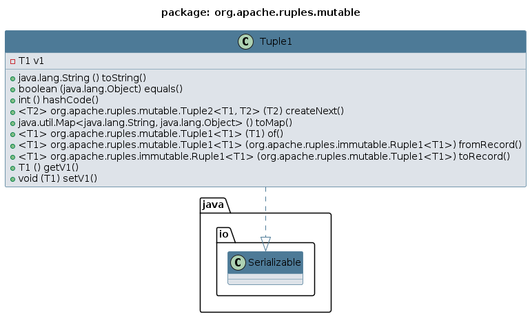

Package org.apache.ruples.mutable
Class Tuple1<T1>
java.lang.Object
org.apache.ruples.mutable.Tuple1<T1>
- All Implemented Interfaces:
Serializable
Represents a mutable Tuple structure that can hold a fixed number of related values. The Tuple is a lightweight
container that allows you to group multiple values together, making it perfect for when you need to pass around
multiple values as a single entity. This class supports values of any type and provides an easy way to store and
retrieve them.
Typical use cases include:
- Storing temporary data like user inputs or calculations that may change during runtime.
- Grouping multiple related properties together, such as when working with key-value pairs, records, or multidimensional arrays.
- Passing data between different parts of your application without creating custom classes.
The mutable nature of the Tuple allows for flexibility in scenarios where the stored values need to change over time.
The Tuple classes provide methods for accessing and modifying values, making them ideal for temporary or mutable data.
Example:
Tuple3<String, Integer, Boolean> myTuple = new Tuple3<>("Java can be as funny as Python but Strict as C++", 3.1416, true);
myTuple.setV1("Null pointer exception isn't optional, isn't it?");
System.out.println(myTuple.getV2()); // Prints "Null pointer exception isn't optional, isn't it?"
Tuples are simple, efficient, and powerful – ideal for organizing dynamic data without the overhead of custom-structures.
Class Diagram:

- Since:
- 2024-1118
- Author:
- ClusterBR
- See Also:
-
Constructor Summary
Constructors -
Method Summary
Modifier and TypeMethodDescriptioncreateNext(T2 v2) Create a Tuple of the next dimension based on the current instance by adding another typed value.booleanCompares input Object "o" with this Tuple instance.static <T1> Tuple1<T1>fromRecord(Ruple1<T1> record) Creates a new instance of a Tuple based on the provided Ruple.getV1()Gets the value-1inthashCode()Gets the instance hash-code based on instance-values.static <T1> Tuple1<T1>of(T1 v1) Factory method to create a TuplevoidSets the value-1toMap()Convert current Tuple to a Map.static <T1> Ruple1<T1>Creates a new instance of a Ruple using the values from this Tuple instance.toString()Converts the instance into its string representation.
-
Constructor Details
-
Tuple1
public Tuple1()Default constructor, sets initial values to null. -
Tuple1
Parametrized constructor.- Parameters:
v1- - value
-
-
Method Details
-
toString
Converts the instance into its string representation. -
equals
Compares input Object "o" with this Tuple instance. -
hashCode
public int hashCode()Gets the instance hash-code based on instance-values. The hash of each value contributes to generate the total hash. -
createNext
Create a Tuple of the next dimension based on the current instance by adding another typed value.- Parameters:
v2- - value- Returns:
- a new instance of Tuple
-
toMap
Convert current Tuple to a Map.The Map will contain keys with names like: "v1", "v2", "v3",... corresponding to the values in the Tuple.
For example, a Tuple with elements (v1, v2, v3) will be converted to a Map with entries:
{"v1":v1, "v2":v2, "v3":v3, ...}- Returns:
- a new instance of Map |String, Object| where each key corresponds to a Tuple field.
-
of
Factory method to create a Tuple- Parameters:
v1-- Returns:
- a new instance of Tuple
-
fromRecord
Creates a new instance of a Tuple based on the provided Ruple.- Parameters:
record-- Returns:
- a new instance of Tuple
-
toRecord
Creates a new instance of a Ruple using the values from this Tuple instance.- Parameters:
tuple-- Returns:
- a new instance of Ruple
-
getV1
Gets the value-1- Returns:
- the value-1 of the Tuple instance
-
setV1
Sets the value-1- Parameters:
v1- - the value-1 to set into the Tuple
-